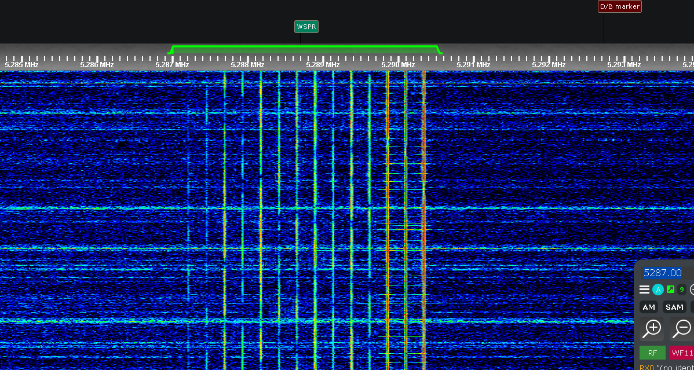
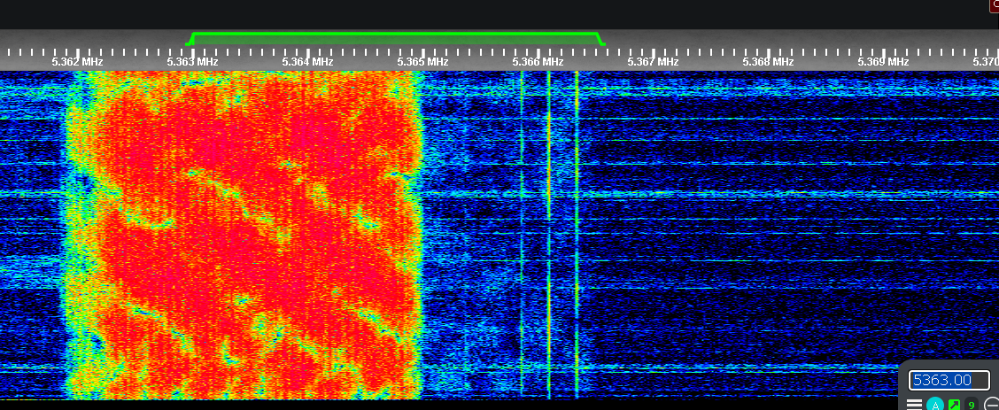
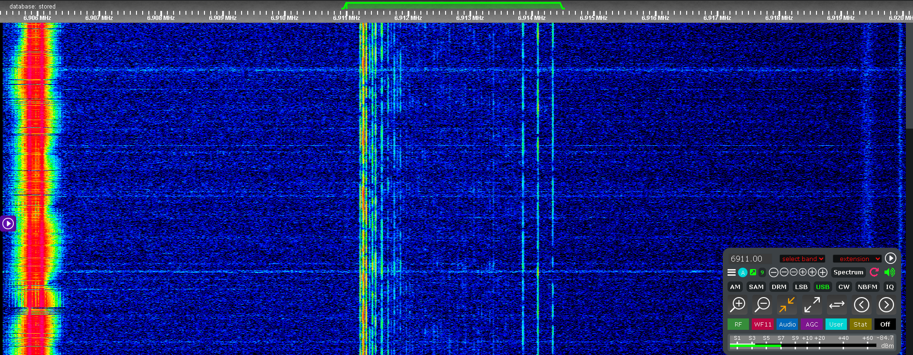
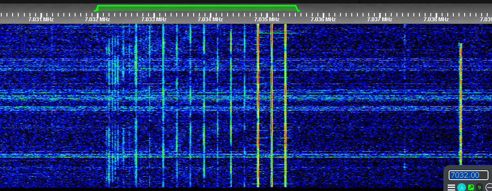
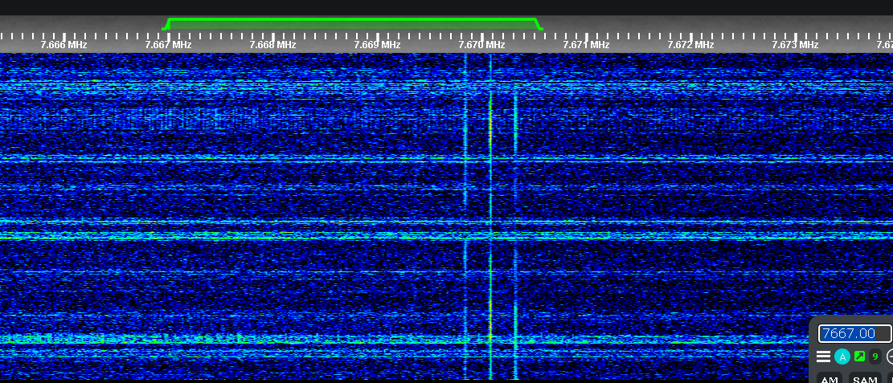
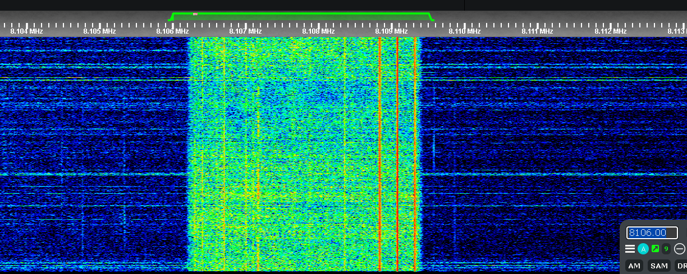
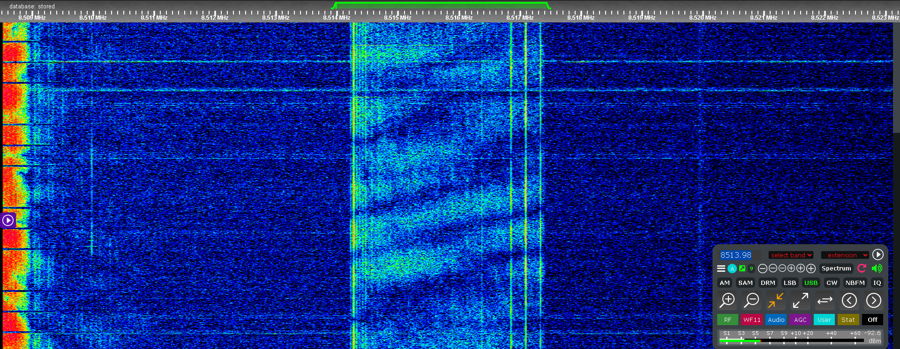
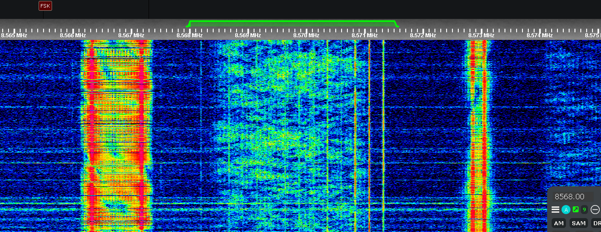

Click here to go back to the main page.
| Name: |
Southern Russian Network Callsigns: N/A Signabroam ID: S6911 / U7032 |
|---|---|
| Frequencies |
Active: 5287, 5363, 6911, 7032, 7667, 8106, 8514, 8568 Inactive: 5436, 6828, 7546, 7649, 8001, 9310 |
| Status | Active |
| Voice | Female |
| Mode | USB |
| Location | Russia |
| Known counterpart stations | The Stalingrad Clock, Northern Russian Network |
| Description |
The Southern Russian Networks are propaganda networks against Ukraine, which are believed to be operated by the Russian government. They are known for broadcasting propaganda songs such as Nationalist Russian songs against Ukraine, and they are often heard in the southern regions of Russia. The channels are kept active 24/7 with 50 Hz hum marker and Russian CIS-3 (Unaproved source) though to be time synchronisation tones since a 60 BPM tick is visible on the spectrogram. The channels are often heard with no actual traffic, but sometimes they are heard with actual traffic, which is believed to be propaganda songs against Ukraine, since 2025 the channels are inactive (only marker running), only 6911 khz keep transmit propaganda. The January, 20th 2025 The Stalingrad Clock (6911 kHz) transmitted a warning message saying in loop "warning, checking the sound warning system" ("системы, оповещения Внимание проверка звуковой"). (See media for video footage) |
| Media |
Signal Phantom video about:
The Stalingrad Clock (6911 kHz) January, 20th 2025 warning message: Waterfall picture footage of 5287 kHz, 5363 kHz, 6911 kHz, 7032 kHz, 7667 kHz, 8106 kHz, 8514 kHz, 8568 kHz (Active channels)         |